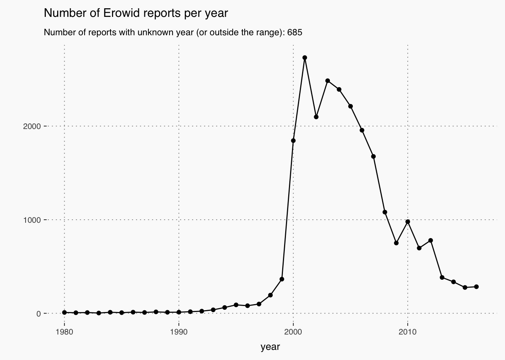
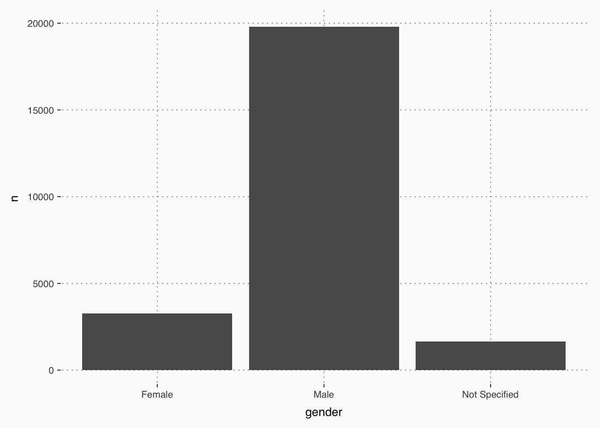
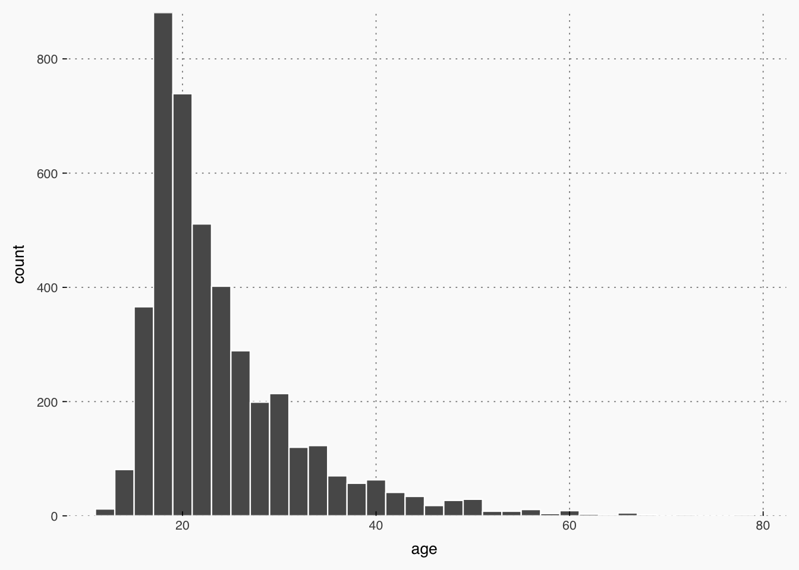
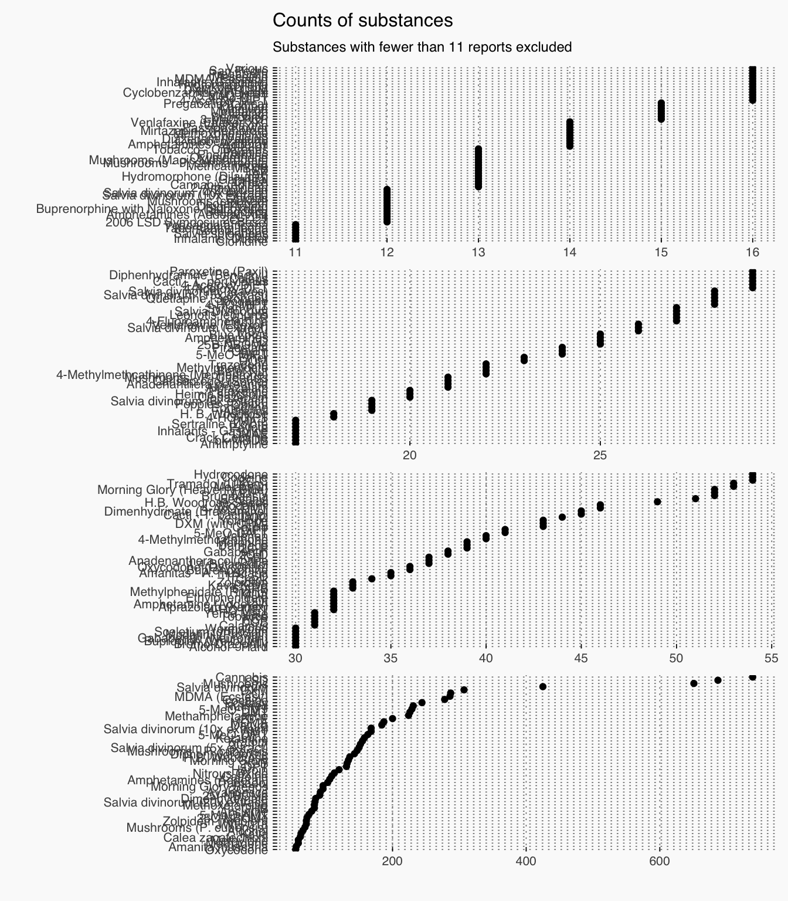
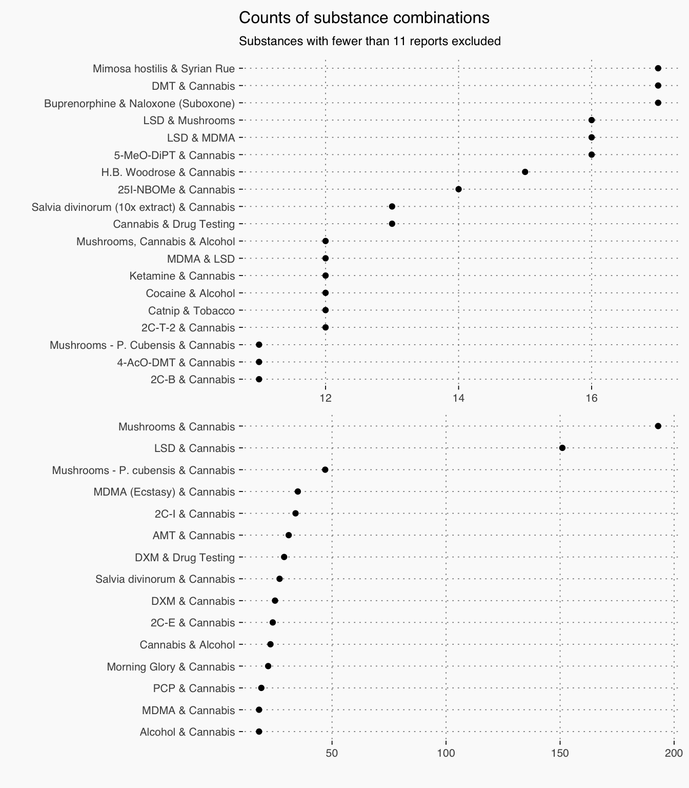
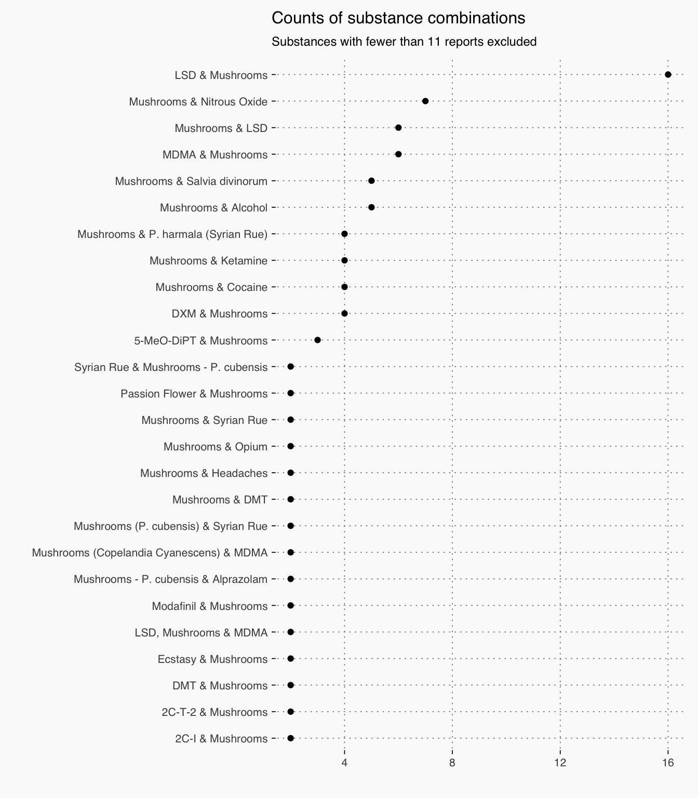

library(tidyverse)
library(stringr)
library(knitr)
library(tmasc)
theme_set(theme_tmasc)“The Erowid Experience Vaults are an attempt to catalog the wide variety of experiences people have with psychoactive plants and chemicals as well as experiences with endogenous (non-drug) mystical experiences, drug testing, police interactions, deep experiences of connection to music, etc.” (Erowid Experience Vault)
The erowid_reports data set in tmasc contains written reports of some 24 thousand of these experiences, in a tidy data_frame ready for text mining, visual, and statistical analyses in R (or other software.)
erowid_reports## # A tibble: 24,788 × 16
## id title author
## <int> <chr> <chr>
## 1 1 An Unforgettable Ride! Johnny Blaze
## 2 2 A Trip to Remember....If I Could! SpEcK
## 3 3 Lost for 20 e4me&u
## 4 4 Spectrum of Effects Elfstone
## 5 5 2CT Heaven God
## 6 6 Blooming on Fry Street Great Ludwigo
## 7 7 Ego Death, Infinite Deja-Vu, Scared Shitless Stash
## 8 8 Mother Nature and the Mountain e is4 Pete
## 9 9 The night of my life, how i remembered it Stephen
## 10 10 Ode to Joy Bry
## # ... with 24,778 more rows, and 13 more variables: gender <chr>,
## # age <chr>, kg <dbl>, year <int>, published <date>, rating <chr>,
## # url <chr>, citation <chr>, views <int>, substance <chr>, text <chr>,
## # erowid_warning <lgl>, dosechart <list>One of the columns in the data frame is actually a list of data frames containing more detailed information about the substance(s) in each report, and can be used for more complex analyses. For the example here, we will drop this column for clarity.
reports <- select(erowid_reports, -dosechart)Unfortunately 70 reports failed to scrape but hopefully these will be included later.
reports <- filter(reports, !is.na(text))Many, but not all, of the reports contain a timestamp of the year of the experience. Here are reports from between 1980 and 2016
reports %>%
filter(year %in% 1980:2016) %>%
group_by(year) %>%
count() %>%
ggplot(aes(x=year, y=n)) +
geom_point() +
geom_line(group = 1) +
labs(title = "Number of Erowid reports per year",
subtitle = paste0("Number of reports with unknown year (or outside the range): ", nrow(filter(reports, !(year %in% 1980:2016)))),
y = "")
The majority of reports are from men.
reports %>%
group_by(gender) %>%
count() %>%
ggplot(aes(x=gender, y=n)) +
geom_bar(stat="identity")
Reporters’ age distribution
reports %>%
group_by(age) %>%
filter(age != "Not Given") %>%
ungroup() %>%
mutate(age = as.integer(age)) %>%
filter(between(age, 11, 101)) %>%
ggplot(aes(x=age)) +
geom_histogram(binwidth = 2, col="white", size = .4) +
scale_y_continuous(expand = c(0, 0))
reports %>%
filter(!str_detect(substance, "&")) %>%
group_by(substance) %>%
count() %>%
filter(n > 10) %>%
mutate(Prevalence = Hmisc::cut2(n, g=4)) %>%
ggplot(aes(x=reorder(substance, n), y = n)) +
geom_point() +
coord_flip() +
facet_wrap("Prevalence", scales = "free", ncol=1) +
labs(title = "Counts of substances", x = "", y = "",
subtitle = "Substances with fewer than 11 reports excluded")
reports %>%
filter(str_detect(substance, "&")) %>%
group_by(substance) %>%
count() %>%
filter(n > 10) %>%
mutate(Prevalence = Hmisc::cut2(n, g=2)) %>%
ggplot(aes(x=reorder(substance, n), y = n)) +
geom_point() +
coord_flip() +
facet_wrap("Prevalence", scales = "free", ncol=1) +
labs(title = "Counts of substance combinations", x = "", y = "",
subtitle = "Substances with fewer than 11 reports excluded")
reports %>%
filter(str_detect(substance, "&")) %>%
group_by(substance) %>%
count() %>%
filter(str_detect(substance, "Mushrooms"),
!str_detect(substance, "Cannabis"),
n > 1) %>%
ggplot(aes(x=reorder(substance, n), y = n)) +
geom_point() +
coord_flip() +
labs(title = "Counts of substance combinations", x = "", y = "",
subtitle = "Substances with fewer than 11 reports excluded")
Sample report
set.seed(9)
reports %>%
filter(rating == "Very Highly Recommended", substance == "DMT") %>%
sample_n(1) %>%
select(text) %>%
as.character() %>%
gsub(".*sense of strength going in.|The question of intentionality.*",
"", .) %>%
cat()
The heat melted the light yellow tinted crystals into a colourless pool which gathered in the bottom of the bulb. I watched white vapour uncoiling around the glass as the bulb became opaque. I drew slowly one long potent lungful and as I did so the vapour billowed more furiously. My tongue and lips numbed and my respiratory plumbing stung a little as I filled up. Eyes opened I placed the still billowing bulb down on a cold hob and turned the heat off. As I did this the room tinted yellow sepia, and I shut my eyes looking for a slide show. I was immediately disappointed. Just the womblike state with some extra patterning, but then the warm crescendo of buzzing both audible and physical spread through my neck and shoulders, followed by a very slight crack or snap from somewhere in my auditory canal.
For a short while I was not strictly local. I dont remember events as such, just a sensation of being somewhere in between my kitchen and the dreamworld. Then this absence of self was burst by a small patch of vivid vision. Like the view through a tiny hole in the wall of a darkened room out on to the scene on a bright summer day. I thought I saw a snippet of rows of parked cars, like the US guzzlers of the 50s with their chromed wings, or maybe it was an orderly residential scene. I gasped involuntarily, startled by the many implications of this vision. The stylistic appearance of the scenes were partly culturally familiar, and at the same time slightly skewed. I was startled out of phase with the vision, but I was exhilarated and back in the afterglow where I began giving praise to the universe for what I could only formulate as the privelege of what I had seen.